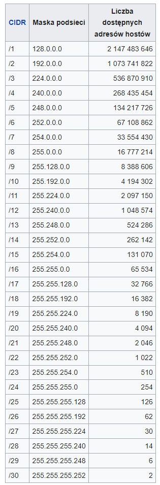

Adres IP to liczbowy identyfikator nadawany interfejsowi sieciowemu, grupie interfejsów, bądź całej sieci komputerowej w protokole IP, służący identyfikacji elementów sieci w warstwie trzeciej modelu OSI – w obrębie sieci lokalnej oraz poza nią (tzw. adres publiczny).
Adres IP nie jest „numerem rejestracyjnym” komputera – nie identyfikuje jednoznacznie fizycznego urządzenia – może się dowolnie często zmieniać (np. przy każdym wejściu do sieci Internet) jak również kilka urządzeń może dzielić jeden publiczny adres IP, lub pojedynczy adapter sieciowy może mieć wiele adresów IP.
W najpopularniejszej wersji czwartej (IPv4) jest zapisywany zwykle w podziale na oktety zapisywane w systemie dziesiętnym i oddzielane kropkami, rzadziej szesnastkowym bądź dwójkowym (oddzielane dwukropkami bądź spacjami).
Adresy IPv4 są 32-bitowymi liczbami całkowitymi. Adres IPv4 w formie dziesiętnej jest oddzielany kropkami np. 208.80.152.2. Adresy IP w postaci dwójkowej wykorzystywane są niezmiernie rzadko, najczęściej do wyznaczenia maski sieci lub maski podsieci, przykładowy adres w postaci dwójkowej to:
11010000 01010000 10011000 00000010.
Klasy adresów IP - Projektanci protokołu IPv4 wyróżnili 5 klas, o różnych znaczeniach dla adresów IP.
Klasa A –
dla sieci bardzo dużych rozmiarów
najstarszy bit adresu ma wartość 0, maska min. /8
Klasa B –
dla sieci średnich rozmiarów
dwa najstarsze bity: 10, maska min. /16
Klasa C –
dla sieci małych rozmiarów
trzy najstarsze bity: 110, maska min. /24
Klasa D –
dla adresów rozsyłania grupowego (ang. multicast)
cztery najstarsze bity: 1110
Klasa E –
adresy eksperymentalne, nie używane
Maska podsieci to liczba służąca do wyodrębnienia w adresie IP części będącej adresem podsieci i części, która jest adresem hosta w tej podsieci. Podstawową funkcją maski podsieci jest określenie ile kolejnych bitów w adresie IP stanowi adres podsieci, czyli adres jednoznacznie identyfikujący daną podsieć.
Pola adresu IP, dla których w masce znajduje się bit równy 1, należą do adresu podsieci, a pozostałe bity do adresu urządzenia w tej podsieci. Po wykonaniu iloczynu bitowego maski i adresu IP, otrzymuje się adres IP całej podsieci, do której należy urządzenie z tym adresem IP.
Maska adresu jest takiej samej długości jak adres IP i składa się z ciągu bitów o wartości 1, po których następuje ciąg zer – dla IPv4 maska ma 32 bity, dla IPv6 ma 128 bitów. W przypadku IPv4 podawana jest najczęściej w postaci czterech liczb 8-bitowych zapisanych zazwyczaj dziesiętnie i oddzielonych kropkami (na przykład 255.255.255.224). Wartość maski musi być znana wszystkim routerom i komputerom znajdującym się w danej podsieci. W wyniku porównywania maski adresu (np. 255.255.255.0) z konkretnym adresem IP (np. 192.180.5.22) router otrzymuje informację o tym, która część adresu identyfikuje podsieć (w tym przypadku 192.180.5), a która urządzenie mające przypisany ten adres IP (.22).
Często można spotkać się ze skróconym zapisem maski w postaci określającej liczbę początkowych bitów mających wartość 1. Najczęściej spotykany jest zapis, w którym podawany jest adres podsieci, a następnie po rozdzielającym ukośniku skrócony zapis maski.
Przeliczanie masek w IPv4:
Liczba dostępnych adresów hostów w danej podsieci jest o 2 mniejsza (zarezerwowany jest adres podsieci i adres rozgłoszeniowy) od liczby możliwych unikalnych adresów w tej podsieci.
